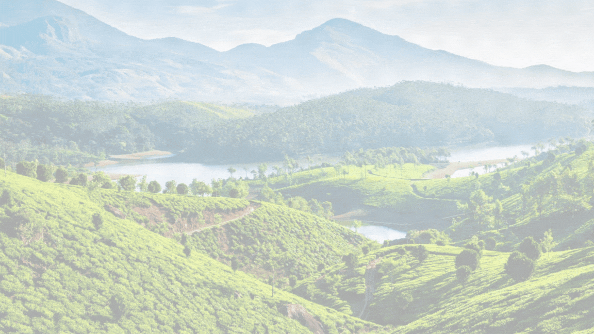

We believe travel should leave a positive footprint. That’s why we partner with local communities, promote responsible tourism, and prioritize nature conservation in every trip we design. From trekking through the Eastern Himalayas to exploring hidden tribal cultures and wildlife sanctuaries, each itinerary is crafted to offer unforgettable memories with minimal environmental impact. We also offer some activities like Tree House, Camping, Rafting, Trekking, Fishing, Cultural Activities, & Air Swings.
Let Green Escape Adventure be your gateway to India’s most unexplored and breathtaking region—where every journey is a step closer to nature, culture, and self-discovery.
Assam
Meghalaya
Arunachal Pradesh
Mizoram
Nagaland
Manipur
Tripura
• Quality Service and Experience
• Discover New Offbeat Places
• Different Experiences Close to Nature Apart from Daily Lifestyle
• Improvement from daily Feedbacks
• Oppertunities to Enjoy Local Food & Drinks
[ 1. Assam - Dish: Masor Tenga (A tangy fish curry made with tomatoes or lemon) - Drink: Xaj Pani (A traditional rice beer of the Ahom community)
2. Arunachal Pradesh - Dish: Thukpa (A noodle soup influenced by Tibetan cuisine) - Drink: *Apong (A local rice beer made by fermenting rice)
3. Manipur - Dish: Eromba (A mashed vegetable dish with fermented fish) - Drink: Sekmai Yu (A traditional rice-based liquor)
4. Meghalaya - Dish: Jadoh (A Khasi dish of rice and pork cooked with turmeric) - Drink: Kyat (A local rice beer with a unique fermentation process)
5. Mizoram - Dish: Bai (A vegetable stew with bamboo shoots and meat) - Drink: Zawlaidi (A local grape wine)
6. Nagaland - Dish: Smoked Pork with Bamboo Shoot (A signature Naga dish with smoky flavors) - Drink: Zutho (A fermented rice beer popular among the Angami tribe)
7. Tripura - Dish: Mui Borok (A traditional dish made with fermented fish called Berma) - Drink: Chuwarak (A strong local liquor made from rice or millet)]


About us
Green Escape Adventure is a passionate travel company dedicated to unlocking the natural beauty and cultural richness of North East India. Specializing in eco-friendly and immersive travel experiences, we take you deep into the heart of the Seven Sisters— Assam, Arunachal Pradesh, Meghalaya, Manipur, Mizoram, Nagaland, and Tripura . Whether you're seeking lush forests, cascading waterfalls, remote villages, or vibrant local traditions, Green Escape Adventure curates journeys that blend adventure, authenticity, and sustainability.We believe travel should leave a positive footprint. That’s why we partner with local communities, promote responsible tourism, and prioritize nature conservation in every trip we design. From trekking through the Eastern Himalayas to exploring hidden tribal cultures and wildlife sanctuaries, each itinerary is crafted to offer unforgettable memories with minimal environmental impact. We also offer some activities like Tree House, Camping, Rafting, Trekking, Fishing, Cultural Activities, & Air Swings.
Let Green Escape Adventure be your gateway to India’s most unexplored and breathtaking region—where every journey is a step closer to nature, culture, and self-discovery.
Travel Packages
Explore our best Eco-Tourism travel packages across North East India.
Why us ?
• Uniqueness (Tree House, Camping, Rafting, Trekking, Fishing, Cultural Activities, Air Swings)• Quality Service and Experience
• Discover New Offbeat Places
• Different Experiences Close to Nature Apart from Daily Lifestyle
• Improvement from daily Feedbacks
• Oppertunities to Enjoy Local Food & Drinks
[ 1. Assam - Dish: Masor Tenga (A tangy fish curry made with tomatoes or lemon) - Drink: Xaj Pani (A traditional rice beer of the Ahom community)
2. Arunachal Pradesh - Dish: Thukpa (A noodle soup influenced by Tibetan cuisine) - Drink: *Apong (A local rice beer made by fermenting rice)
3. Manipur - Dish: Eromba (A mashed vegetable dish with fermented fish) - Drink: Sekmai Yu (A traditional rice-based liquor)
4. Meghalaya - Dish: Jadoh (A Khasi dish of rice and pork cooked with turmeric) - Drink: Kyat (A local rice beer with a unique fermentation process)
5. Mizoram - Dish: Bai (A vegetable stew with bamboo shoots and meat) - Drink: Zawlaidi (A local grape wine)
6. Nagaland - Dish: Smoked Pork with Bamboo Shoot (A signature Naga dish with smoky flavors) - Drink: Zutho (A fermented rice beer popular among the Angami tribe)
7. Tripura - Dish: Mui Borok (A traditional dish made with fermented fish called Berma) - Drink: Chuwarak (A strong local liquor made from rice or millet)]
Customer Reviews
See what our customers have to say about us!
Photo Gallery
Company Policy
We believe in responsible tourism. Our policies ensure sustainable travel and respect for local communities
• Instalment Policies (2 Times)
• Ecofriendly Initiatives in all Marketing Materials
• Use storytelling to feature real traveller experience and positive environmental impact
• Partner with local communities and showcase their culture authentically, and promote locally made products
• Use social media, influencer partnerships, and eco-travel blogs to reach target audience
Customer Service
Have any questions? Reach out to us:
Email: soumokunduk19@gmail.com
Phone: +91 6290585125